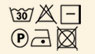

Только качественная пряжа
| Для фильтрации: | Полушерсть |
Детская пряжа для вязания Baby Wool Alize (Беби Вул Ализе) изготовлена из очень мягкой и высококачественной натуральной шерсти и бамбука. Она мягкая, гипоаллергенная, прочная, хорошо пропускает воздух. Пряжа очень приятна в работе: нить не путается, не цепляется за спицы, приятна на ощупь, хорошо смотрится в косах и узорах. Беби Вул Ализе (Baby Wool Alize) – идеальное решение для осенне-зимнего детского гардероба с самого раннего возраста. Шапочки, шарфы, свитера, кофты, жилеты, пинетки, носки, варежки, сарафанчики – ваш малыш будет носить с огромным удовольствием все, если Вы используете в работе эту пряжу.  |
| Сезонность: | Зимняя пряжа | |
| Назначение: | Специально для деток | |
| Способ вязания: | Спицами и крючком | |
| Длина нити в мотке (метров): | 175 | |
| Вес мотка: | 50 гр | |
| Структура нити: | Простая | |
| Состав: | 40%-шерсть, 20%-бамбук, 40%-акри | |
| Окрас: | Однотонная пряжа | |
| Родина модели: | Турция | |
| Толщина нити: | Средняя (от 160м до 400м) | |
| Для фильтрации: | Хлопок с акрилом |
Baby Cotton Gazzal (Беби Коттон Газзал)- детская пряжа, которая подойдет для самой чувствительной кожи. Она мягкая, легкая, шелковистая, гипоаллергенная. Цветовая палитра отличается большим разнообразием цветов. Нитка не растягивается при вязании и хорошо держит форму. Пряжа отлично подходит для вязания детской одежды, пледов, летних топов, кардиганов, мягких игрушек. |
| Сезонность: | Демисезон | |
| Назначение: | Для любой одежды | |
| Способ вязания: | Спицами и крючком | |
| Длина нити в мотке (метров): | 165 | |
| Вес мотка: | 50 гр | |
| Структура нити: | Простая | |
| Состав: | 60% хлопок, 40% акрил | |
| Окрас: | Однотонная пряжа | |
| Родина модели: | Турция | |
| Толщина нити: | Средняя (от 160м до 400м) |

| Для фильтрации: | Полушерсть |
Зимняя классика — полушерстяная пряжа Lana Gold Alize (Лана Голд Ализе) прекрасно подойдет для вязания теплых вещей: уютных свитеров и мягких кофт, удобных и стильных платьев и сарафанов, ярких шарфов и шапочек. Сбалансированный состав пряжи Lana Gold Alize (Лана Голд Ализе) позволяет получать мягкие, приятные к телу вещи, хранящие тепло натуральной шерсти и обладающие практичностью акриловой нити. Выбирайте для себя нежные пастельные тона или яркие и насыщенные зимние оттенки и создавайте собственные шедевры. Работать с пряжей Лана Голд от Ализе — это настоящее удовольствие, а результат порадует и мастерицу, и счастливую обладательницу рукотворного шедевра вязального искусства. |
| Сезонность: | Зимняя пряжа | |
| Назначение: | Для любой одежды | |
| Способ вязания: | Спицами и крючком | |
| Длина нити в мотке (метров): | 240 | |
| Вес мотка: | 100 гр | |
| Структура нити: | Простая | |
| Состав: | 49% шерсть , 51% акрил | |
| Родина модели: | Турция | |
| Толщина нити: | Средняя (от 160м до 400м) | |